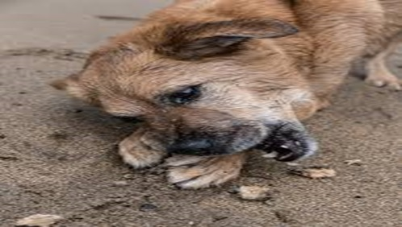

Quando o assunto é denúncia de maus-tratos ou crueldade contra animais, o Brasil possui legislação pertinente e autoridades competentes que são responsáveis pela manutenção da lei e punição de crimes.
Caso você presencie maus-tratos a animais de quaisquer espécies, sejam domésticos, domesticados, silvestres ou exóticos – como abandono, envenenamento, presos constantemente em correntes ou cordas muito curtas, manutenção em lugar anti-higiênico, mutilação, presos em espaço incompatível ao porte do animal ou em local sem iluminação e ventilação, utilização em shows que possam lhes causar lesão, pânico ou estresse, agressão física, exposição a esforço excessivo e animais debilitados (tração), rinhas, etc.